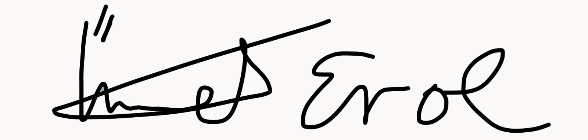

Application homepage | Ümmet Erol
- Ümmet Erol
- Application
- Specific knowledge

Application as Team Captain
Dear Ms Lindner,
I would like to apply for the position of Team Captain. My knowledge, experience and leadership qualities make me an excellent candidate for this position.
I have a position of trust within my team. Through my experience in the department and my professional career, I have proven time and time again that I am capable of leading teams and being successful. I am also understood and accepted by my teammates.
Because of my leadership skills, I can motivate and inspire my team members to work together towards a common goal. I have a strong sense of responsibility and commitment to excellence, which has helped me to build and maintain strong relationships with team members, colleagues and stakeholders.
I am also an excellent communicator, able to listen carefully to the needs and concerns of team members and provide clear feedback and guidance. I am able to adapt to different working styles and personalities and ensure that each team member is valued and supported.
I am intrigued by the opportunity to apply my skills and experience as a team captain and I am confident that I can make a valuable contribution to the organisation.
Thank you for your consideration of my application.
Sincerely yours
